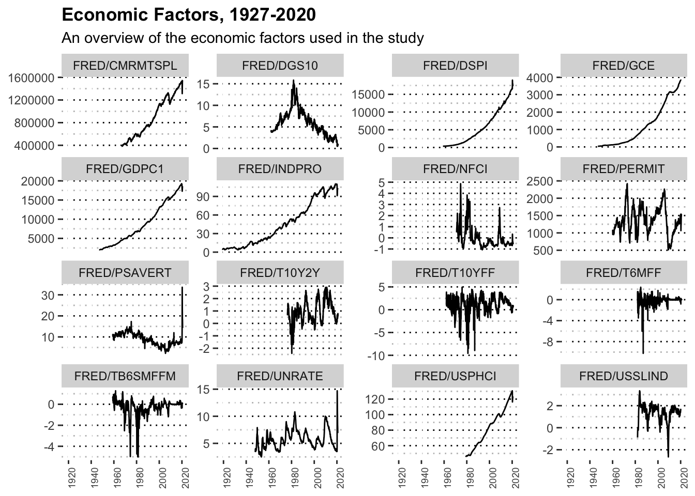

Chapter 4 Data Preparation
“If you torture the data long enough, it will confess.”
There is mast amount of data available publicly from many reliable sources. This data ranges market, fundamental, economic, and political data. The aim of this section of the research is to curate and manipulate the different available data to find viable indicators of the current market cycle.
4.1 Factors Tested

| Factor | Name | Stationary | Linear | Chart |
|---|---|---|---|---|
| FRED/NFCI | National Financial Conditions Index | TRUE | FALSE | |
| FRED/INDPRO | Industrial Production Index | FALSE | FALSE | |
| FRED/GCE | Government Consumption Expenditures and Gross Investment | FALSE | FALSE | |
| FRED/UNRATE | Unemployment Rate | TRUE | FALSE | |
| FRED/GDPC1 | Real Gross Domestic Product | FALSE | FALSE | |
| FRED/PSAVERT | Personal Saving Rate | FALSE | FALSE | |
| FRED/DSPI | Disposable Personal Income | FALSE | FALSE | |
| FRED/CMRMTSPL | Real Manufacturing and Trade Industries Sales | FALSE | FALSE | |
| FRED/PERMIT | New Private Housing Units Authorized by Building Permits | FALSE | FALSE | |
| FRED/DGS10 | 10-Year Treasury Constant Maturity Rate | FALSE | FALSE | |
| FRED/T10Y2Y | 10-Year Treasury Constant Maturity Minus 2-Year Treasury Constant Maturity | FALSE | FALSE | |
| FRED/T10YFF | 10-Year Treasury Constant Maturity Minus Federal Funds Rate | FALSE | FALSE | |
| FRED/TB6SMFFM | 6-Month Treasury Bill Minus Federal Funds Rate | TRUE | FALSE | |
| FRED/T6MFF | 6-Month Treasury Constant Maturity Minus Federal Funds Rate | TRUE | FALSE | |
| FRED/USPHCI | Coincident Economic Activity Index for the United States | FALSE | FALSE | |
| FRED/USSLIND | Leading Index for the United States | FALSE | FALSE |
4.2 Testing Stationarity
## [1] TRUE## [1] FALSE4.3 Recessions
| Peak | Trough |
|---|---|
| 1902-09-01 | 1904-08-01 |
| 1907-05-01 | 1908-06-01 |
| 1910-01-01 | 1912-01-01 |
| 1913-01-01 | 1914-12-01 |
| 1918-08-01 | 1919-03-01 |
| 1920-01-01 | 1921-07-01 |
| 1923-05-01 | 1924-07-01 |
| 1926-10-01 | 1927-11-01 |
| 1929-08-01 | 1933-03-01 |
| 1937-05-01 | 1938-06-01 |
| 1945-02-01 | 1945-10-01 |
| 1948-11-01 | 1949-10-01 |
| 1953-07-01 | 1954-05-01 |
| 1957-08-01 | 1958-04-01 |
| 1960-04-01 | 1961-02-01 |
| 1969-12-01 | 1970-11-01 |
| 1973-11-01 | 1975-03-01 |
| 1980-01-01 | 1980-07-01 |
| 1981-07-01 | 1982-11-01 |
| 1990-07-01 | 1991-03-01 |
| 2001-03-01 | 2001-11-01 |
| 2007-12-01 | 2009-06-01 |
| 2020-02-01 | 2020-08-30 |
4.4 S&P500 Index
## [1] "^GSPC"Figure 4.1: S&P500 Price vs Recessions
Figure 4.2: S&P500 Daily Returns vs Recessions
4.5 National Financial Conditions Index
Figure 4.3: National Financial Conditions Index vs Recessions
4.6 Industrial Production Index
Figure 4.4: Industrial Production Index vs Recessions
4.7 Real Government Consumption Expenditures and Gross Investment
4.8 Dollar Index
4.8.1 Trade Weighted U.S. Dollar Index: Advanced Foreign Economies, Goods and Services (DTWEXAFEGS)
4.8.2 Trade Weighted U.S. Dollar Index: Broad, Goods and Services (DTWEXBGS)
4.8.3 Trade Weighted U.S. Dollar Index: Major Currencies, Goods (DISCONTINUED) (DTWEXM)
4.8.4 Trade Weighted U.S. Dollar Index: Broad, Goods (DISCONTINUED) (DTWEXB)
4.9 10-Year Treasury Constant Maturity Rate (DGS10)
4.10 Real Gross Domestic Product (GDPC1)
4.11 Unemployment Rate (UNRATE)
====================================
4.12 S&P500 Analysis
4.12.1 Price vs. Recessions (Line)
4.12.2 Returns Vs. Recessions (Line)
4.12.3 Returns Vs. Recessions (Box-plot)
4.12.4 Draw-downs vs. Recessions (Line)
4.13 Fundamentals
(Carlson, Sargent, and others 1997) uses PE Ration, Earnings, Dividends, Dividends/Payout Ratio (Brennan 1998) use Price-Dividends Ratio (Yield inverse), Natural Log Annual Dividends (Keimling 2016) uses Price-Book ratio, Shiller PE
4.13.1 S&P 500 PE Ratio
The S&P 500 price-to-earnings ratio, or PE ratio, is a ratio used for evaluating the market. It measures its current value divided by the earnings of all S&P500 companies. The S&P500 PE ratio is also known as the price multiplier or the earnings multiplier.
Figure 4.5: S&P 500 PE Ratio vs Recessions
Figure 4.6: S&P500 PE Ratio ACF & PACF
4.13.2 S&P 500 Earnings Yield (inverse)
The earnings yield is an indicator that refers to the earnings for the most recent 12-month period divided by the Market value of all companies in the S&P500. The earnings yield (which is the inverse of the P/E ratio) shows the percentage of the S&P500 index’s earnings per share.
Figure 4.7: S&P 500 Earnings Yield vs Recessions
Figure 4.8: S&P 500 Earnings Yield vs Recessions (Box Plot)
Figure 4.9: S&P 500 Earnings Yield Change vs Recessions
Figure 4.10: S&P500 Earnings Yield ACF & PACF
4.13.3 Shiller PE Ratio
Figure 4.11: Shiller PE Ratio vs Recessions
Figure 4.12: Shiller PE Ratio vs Recessions (Box Plot)
Figure 4.13: Shiller PE Ratio Change vs Recessions
4.13.4 S&P 500 Price to Sales Ratio
Figure 4.14: S&P 500 Price to Sales Ratio vs Recessions

Figure 4.15: S&P 500 Price to Sales Ratio vs Recessions (Box Plot)
Figure 4.16: S&P 500 Price to Sales Ratio Change vs Recessions
4.13.5 S&P 500 Price to Book Value
Figure 4.17: S&P 500 Price to Book Value vs Recessions
Figure 4.18: S&P 500 Price to Book Value vs Recessions (Box Plot)
Figure 4.19: S&P 500 Price to Book Value Change vs Recessions
4.13.6 S&P 500 Dividend Growth
Figure 4.20: S&P 500 Dividend Growth vs Recessions
Figure 4.21: S&P 500 Dividend Growth vs Recessions (Box Plot)
Figure 4.22: S&P 500 Dividend Growth Change vs Recessions
4.14 Seasonal Analysis
4.14.1 Time Analysis Breakdown
4.14.2 SARIMA?
4.14.3 ARCH/GARCH?
4.14.4 Fourier Analysis
4.15 Technical Analysis
4.15.1 Moving Averages
4.15.2 Relative Strength Indicator
4.15.3 Commodity Channel Index
4.16 Politics
4.16.1 Days to next Presidential Elections
- Reverse axis line chart number of days vs returns
- Same chart color coded by party
4.16.2 Political Party
- Box-plot with both parties vs returns
- Box-plot with both parties vs dropdown value
- Bar plot with both parties vs number of recessions
4.17 Economics
4.17.1 National Financial Conditions Index (NFCI)
Figure 4.23: National Financial Conditions Index vs Recessions
Figure 4.24: National Financial Conditions Index vs Recessions (Box Plot)
Figure 4.25: National Financial Conditions Index vs Recessions
Figure 4.26: National Financial Conditions Index vs. S&P500 returns
## [1] 2Figure 4.27: National Financial Conditions Index vs. S&P500 returns
## [1] -1.07126## [1] -0.2008375Figure 4.28: National Financial Conditions Index vs. S&P500 returns
## [1] 2Figure 4.29: National Financial Conditions Index vs. S&P500 returns
4.17.2 Industrial Production Index (IPRO)
4.17.3 Government Consumption Expenditures and Gross Investment (GCE)
4.17.4 Unemployment Rate (UNRATE)
4.17.5 Real Gross Domestic Product (GDPC1)
4.17.6 Personal Saving Rate (PSAVERT)
4.17.7 Disposable Personal Income (DSPI)
4.17.8 Real Manufacturing and Trade Industries Sales (CMRMTSPL)
4.17.10 10-Year Treasury Constant Maturity Rate (DGS10)
4.17.11 10-Year Treasury Constant Maturity Minus 2-Year Treasury Constant Maturity (T10Y2Y)
4.17.12 10-Year Treasury Constant Maturity Minus Federal Funds Rate (T10YFF)
4.17.13 6-Month Treasury Bill Minus Federal Funds Rate (TB6SMFFM)
4.17.14 6-Month Treasury Constant Maturity Minus Federal Funds Rate (T6MFF)
4.17.15 Coincident Economic Activity Index for the United States (USPHCI)
4.17.16 Leading Index for the United States (USSLIND)
References
Brennan, Michael J. 1998. “Stripping the S&P 500 Index.” Financial Analysts Journal 54 (1). Taylor & Francis: 12–22.
Carlson, John B, Kevin H Sargent, and others. 1997. “The Recent Ascent of Stock Prices: Can It Be Explained by Earnings Growth or Other Fundamentals?” Economic Review-Federal Reserve Bank of Cleveland 33. THE FEDERAL RESERVE BANK OF CLEVELAND: 2–12.
Keimling, Norbert. 2016. “Predicting Stock Market Returns Using the Shiller Cape—an Improvement Towards Traditional Value Indicators?” Available at SSRN 2736423.